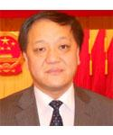

MOE Key Laboratory of Modern Teaching Technology, Shaanxi Normal University
Friday, April 26th 10AM - FIT Room 405
The latest basic education reform in China is based on key competence. General key competencies and discipline key competencies have been constructed in this round curriculum reform. Key competencies of science discipline include science concept and application, science thinking and innovation, science inquiry and communication as well as science attitudes and responsibilities. Instruction plays a key role in the cultivation of key competency. Based on the analyses of latest progresses of learning theories, the analyses of requirement for cultivating key competencies, systematic behavioral researches and brain researches, A Thinking-Based Instruction (TBI) Theory has been proposed. The formation of all key competences must be based on students' active thinking. Active thinking is also required in various learning methods such as problem-based learning, project-based learning, and inquiry-based learning. TBI emphases the cultivation of key competencies (especially critical thinking, creative thinking, communication and collaboration) and active thinking of students. It has been used in national science curriculum standard revision, national assessment of science learning quality, the STEM education system construction in primary and secondary schools as well as teacher professional development. More than 2000 schools in more than 20 provinces promote classroom teaching reform based on TBI. This presentation will introduce basic instruction principle, basic teaching operation procedures and some research evidences of TBI as well as it’s application in different aspects.